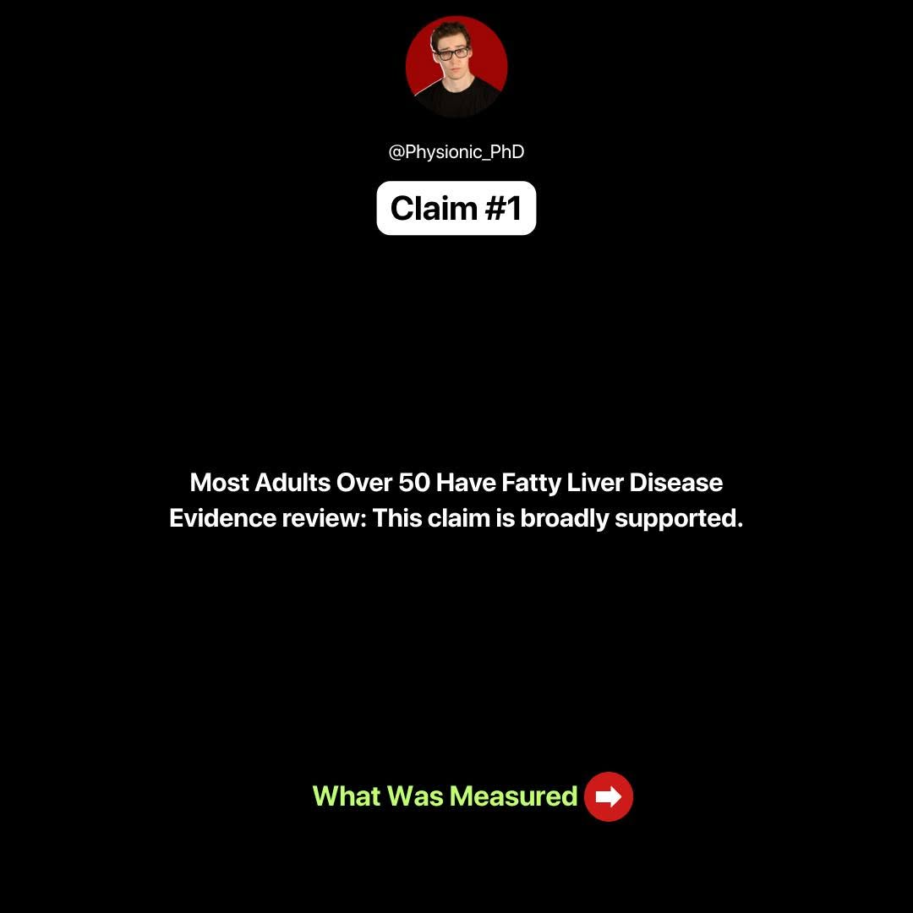
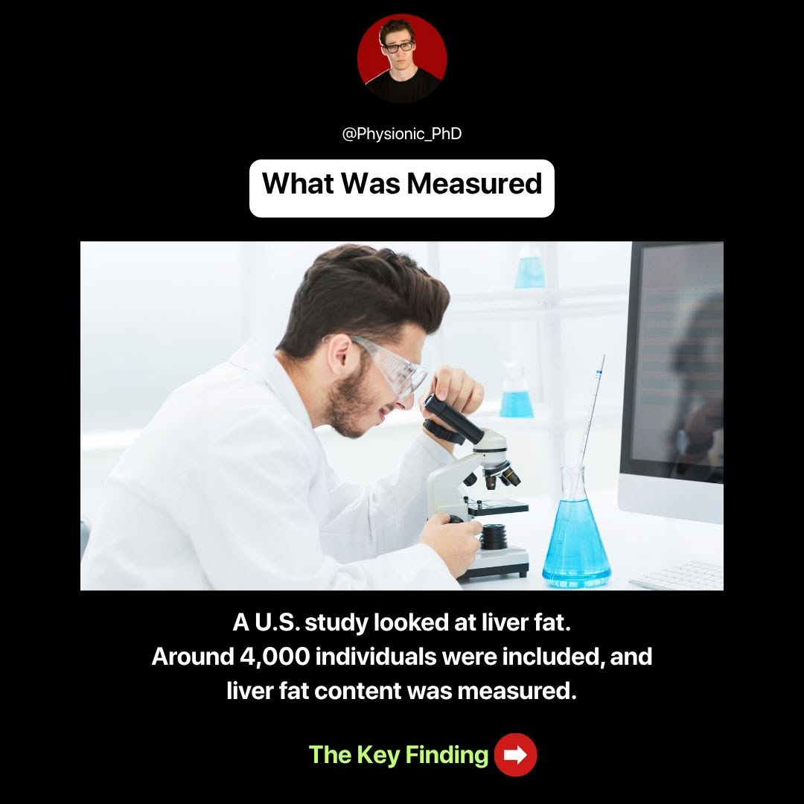
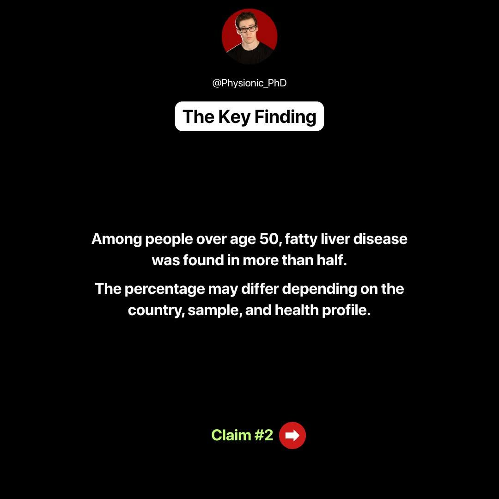
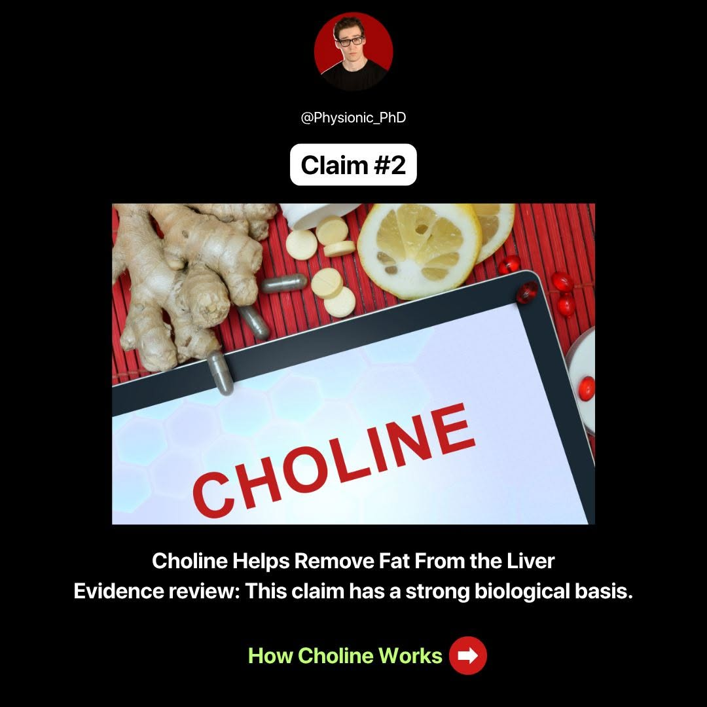

The prevalence of fatty liver disease in people over 50yo may be as high as 50% in the general US population.
It is important for people with fatty liver to get enough dietary choline.
A very well done randomized trial done by Stanley Hazen’s group at the Cleveland Clinic demonstrated that dietary choline in the form naturally found in food (phosphatidylcholine) does NOT raise levels of TMAO: ↪ Eggs and phosphatidylcholine did not raise TMAO in an RCT, unlike choline bitartrate.
#fattyliverHD #liverfatHD #cholineHD #phosphatidylcholineHD #tmaoHD
Fatty liver after 50 may be more common than many people realize.
In a U.S. study of around 4,000 individuals, researchers measured liver fat content and split the data by age. Among people over age 50, the prevalence of fatty liver disease was over 50%.
That number may not apply exactly to every population. It can change depending on the country, sample, and health profile being studied.
Choline also matters because it helps the liver produce VLDL particles, which carry fat from the liver to other tissues.
Choline is converted into phosphatidylcholine, which becomes part of the VLDL particle membrane.
As VLDL particles mature inside liver cells, triglycerides are packaged inside them and released into the bloodstream.
When choline is removed, VLDL production can go down. When choline is reintroduced, VLDL production can rise again.
Main Points Summary:
- Fatty liver disease was found in more than half of people over age 50 in the evidence discussed.
- The exact percentage can vary by population.
- Choline helps produce VLDL particles.
- VLDL particles help move fat out of the liver.
- Choline deficiency can worsen fatty liver.
References:
[1] Zhang X, Heredia NI, Balakrishnan M, Thrift AP. PLoS One. 2021;16(6):e0252164. doi:10.1371/journal.pone.0252164
[2] Yao ZM, Vance DE. J Biol Chem. 1988;263(6):2998-3004.
[3] Verkade HJ, Fast DG, Rusiñol AE, Scraba DG, Vance DE. J Biol Chem. 1993;268(33):24990-24996.
[4] Yao ZM, Vance DE. Biochem Cell Biol. 1990;68(2):552-558. doi:10.1139/o90-079
[5] Buchman AL, Ament ME, Sohel M, et al. J Parenter Enteral Nutr. 2001;25(5):260-268.




